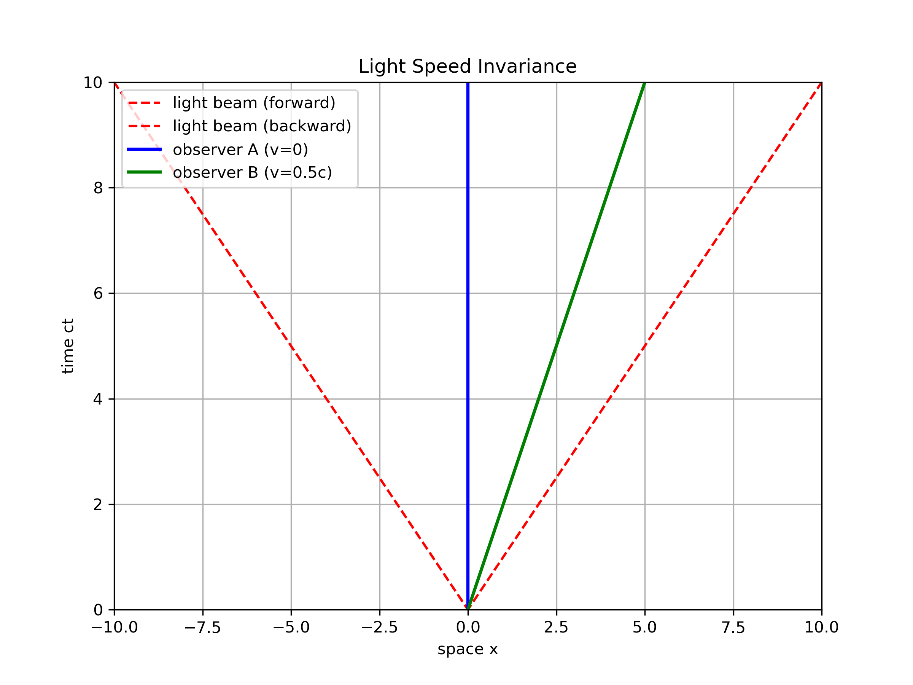
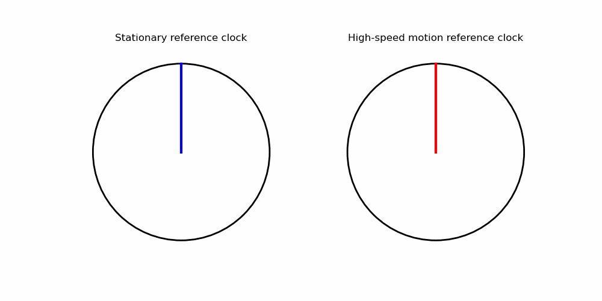
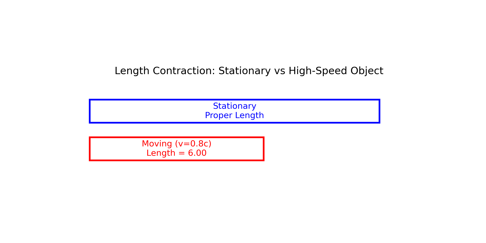
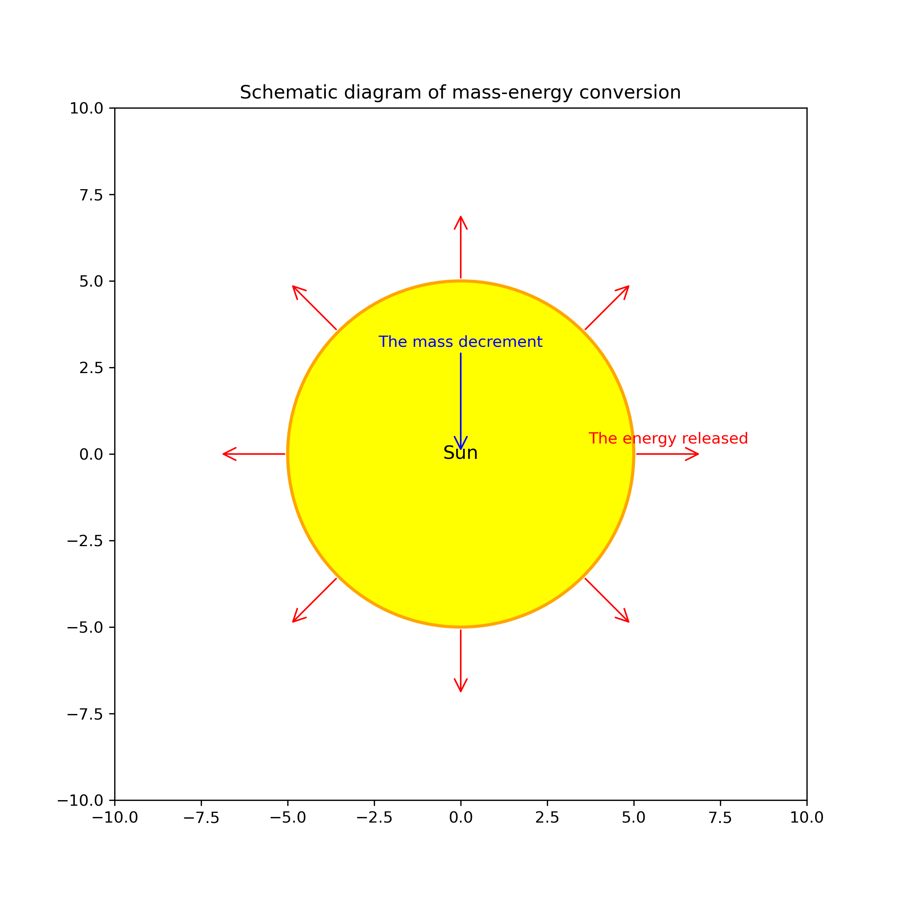

1. 光速不变原理
无论观察者如何运动，光在真空中的速度始终保持不变，约为每秒299,792,458米。这与我们日常经验相悖，因为我们习惯于速度相加。

举例说明：如果一个人在匀速行驶的火车上向前扔一个球，对于站台上的观察者来说，球的速度是火车速度与投掷速度之和。但如果是发射光线，无论火车速度如何，光速对两个观察者都是一样的。
2. 时间膨胀
运动中的时钟比静止时钟走得慢。也就是说，对于静止观察者来说，运动物体上的时间流逝得更慢。速度越接近光速，时间膨胀效应越明显。

实际应用：GPS系统
全球定位系统(GPS)卫星以很高的速度运行，因此其上的原子钟比地面上的时钟每天快约38微秒（相对论效应）。如果不对这种时间差进行校正，GPS的定位误差每天将累积约11千米，使导航系统完全失效。
3. 长度收缩
物体在运动方向上会发生收缩。对静止观察者来说，运动物体在运动方向的长度会变短，收缩程度取决于物体的速度。

例如，如果一根1米长的棒以接近光速运动，在静止观察者看来，它的长度会明显缩短。如果它以光速的86.6%运动，长度将缩短一半，变为0.5米。
4. 质能等价 (E=mc²)
爱因斯坦最著名的公式E=mc²表达了质量和能量的等价关系。任何物质都包含能量，且这个能量等于物质的质量乘以光速的平方。

应用实例：核能
核反应（如核裂变或核聚变）释放的巨大能量正是基于质能等价原理。极小量的物质可以转化为极大量的能量，例如1克物质完全转化为能量可释放约9×10¹³焦耳，相当于2.1万吨TNT爆炸的能量。